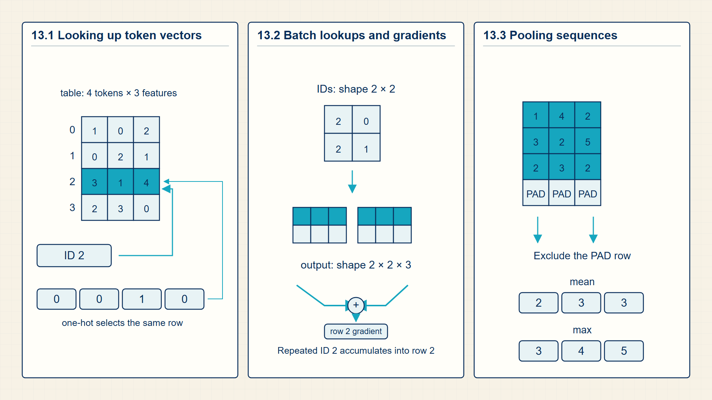
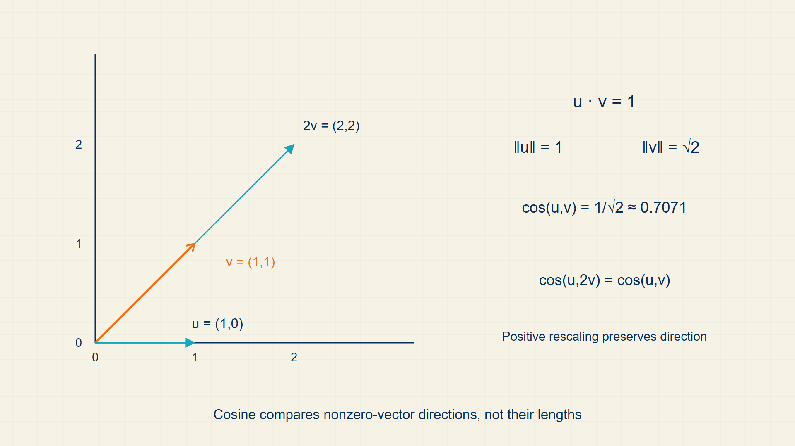

13 Embedding Tables: Looking Up Dense Word Vectors
A token ID names a row in a vocabulary; it is not a meaningful numeric quantity by itself. An embedding table gives each token a trainable vector that a model can combine with other vectors.
Token IDs are addresses, not meaningful numeric values. An embedding table maps each address to a learned vector, and pooling shows one way to turn several token vectors into one sequence representation.
In code, torch.nn.Embedding maps integer IDs to floating-point rows, and torch.mean or masked reductions pool token vectors into one sequence representation.

13.1 Mapping Discrete Token IDs to Dense Vector Coordinates
An embedding matrix is a learned lookup table. It maps each discrete token ID to a dense vector that can be processed by neural layers.
- Embedding matrix: A parameter matrix \(E\) with dimensions \(V\times d\), where \(V\) is the vocabulary size and \(d\) is the embedding width.
- Embedding vector: One row of the embedding matrix selected by a token ID.
- Representation learning: Learning useful features from data instead of manually designing them.
For token IDs with dimensions [B,T], an embedding lookup produces a tensor with dimensions [B,T,d], where B is batch size, T is sequence length, and d is embedding width. This is the first numerical representation inside many language models.
The same concept appears outside text. Vision transformers create patch embeddings, audio models embed time-frequency units, and multimodal models project different modalities into compatible vector spaces.
An embedding layer is a parameter matrix indexed by integer token IDs. The forward operation gathers selected rows; the backward operation adds gradients only to rows used in the batch. Repeated token IDs add their contributions to the same row, so token frequency affects how often an embedding is updated.
Each vocabulary item owns one row of a trainable matrix.
Embedding matrix:
\[ E\in\mathbb{R}^{\lvert V\rvert\times d} \tag{13.1}\]
where |V| is vocabulary size; d is embedding dimension.
embeddings are parameters indexed by token IDs and updated by training.
A token ID selects one row from the embedding matrix.
Embedding lookup:
\[ \operatorname{emb}(x_{t})=E_{x_{t},:} \tag{13.2}\]
where E is embedding matrix with dimensions |V| x d; \(x_{t}\) is token ID at position t.
A vocabulary ID is an integer row address. Indexing E at \(x_{t}\) selects the trainable vector assigned to that token without constructing a one-hot vector explicitly.
the integer ID is not meaningful geometrically; the learned row vector is the representation.
A lookup is equivalent to multiplying a one-hot vector by E, but implemented efficiently as indexing.
One-hot equivalence:
\[ \operatorname{emb}(x_{t})=\operatorname{onehot}(x_{t})^{T}E \tag{13.3}\]
where onehot(\(x_{t}\)) is length-|V| vector with one nonzero coordinate; E is embedding matrix.
Multiplying a one-hot row by E selects the one row whose indicator is 1, which is exactly what embedding lookup implements efficiently.
lookup is mathematically a sparse matrix multiplication but implemented as indexing.
Example: Turning Token IDs into Trainable Vectors
Embedding matrix:
If \(|V|=50{,}000\) and \(d=768\), then \(E\) contains \(50{,}000\times768=38.4\) million scalar entries.
Embedding lookup:
If \(x_{t} = 4\) and E has rows of width 3, emb(\(x_{t}\)) is row 4, a length-3 vector.
One-hot equivalence:
If \(\operatorname{onehot}(2)=(0,0,1,0)\), then \(\operatorname{onehot}(2)^T E\) returns the row of \(E\) indexed by token ID \(2\).
The following runnable PyTorch example receives two sequences of token IDs, looks up four-coordinate rows, mean-pools across the sequence axis, and backpropagates the sum of the pooled values. The final printout reports one gradient magnitude per vocabulary row: rows used by the batch can be nonzero, while unused rows remain zero. The unmasked mean is deliberate here; padded batches require the masked reduction introduced in Chapter 2.
Code example: Embedding lookup, pooling, and selected-row gradients
import torch
import torch.nn as nn
embedding = nn.Embedding(num_embeddings=6, embedding_dim=3)
token_ids = torch.tensor([[1, 2, 1], [3, 2, 0]])
token_vectors = embedding(token_ids)
document_vectors = token_vectors.mean(dim=1)
loss = document_vectors.square().mean()
loss.backward()
print(token_vectors.shape, document_vectors.shape)
print(embedding.weight.grad.abs().sum(dim=1))Rows 0-3 receive gradients because those IDs occur; unused rows remain zero.
Mean pooling ignores order and padding unless a mask is applied.
An embedding replaces a token ID with one learned row of a matrix. A batch lookup gathers many such rows before a sequence model or pooling layer combines them.
13.2 Fast Batch Lookups via Learnable Embedding Matrices
Embeddings are the first place where token ID tensors become dense floating-point tensors.
- One-hot vector: A vocabulary-length vector with one 1 at a token’s ID and zeros elsewhere.
- Embedding row: The trainable vector stored at one vocabulary ID in the embedding matrix.
If X has dimensions B x T, the embedding lookup returns a tensor with dimensions B x T x d. Later attention and transformer chapters preserve that batch and sequence structure while changing hidden vectors.
An embedding lookup uses a token ID as a row number. If the ID is 5, the lookup returns row 5 of the embedding matrix E; it does not compute a dense transformation over every vocabulary row.
The one-hot form gives the same result mathematically. A one-hot row vector selects exactly one row when multiplied by E. Repeated IDs select the same row repeatedly, so their gradient contributions are added during the backward pass.
An embedding lookup for a batch of token sequences with dimensions [B, T] acts as index selection from a parameter matrix E of dimensions [|V|, d], returning a tensor of dimensions [B, T, d].
During backpropagation, only the rows of E corresponding to tokens present in the current batch receive non-zero gradient updates, making the embedding update sparse.
A batch of token IDs becomes a batch of d-dimensional vectors.
Embedding batch:
\[ H_{0}=E[X],\quad H_{0}\in\mathbb{R}^{B\times T\times d} \tag{13.4}\]
In a simple embedding lookup, only selected rows receive direct lookup gradients.
Row-gradient sparsity:
\[ j\notin\mathcal{I}_{B}\quad\to\quad\frac{\partial L}{\partial E_{j,:}}=0 \tag{13.5}\]
One-hot multiplication and integer indexing select the same embedding row.
One-hot embedding lookup:
\[ \operatorname{onehot}(x_{t})^{T}E=E_{x_{t},:} \tag{13.6}\]
where \(x_{t}\) is token ID at position t; E is embedding matrix with dimensions [|V|,d]; onehot(\(x_{t}\)) is vocabulary-length selector vector.
Matrix multiplication forms a weighted sum of the rows of E. A one-hot vector has one weight equal to one and all other weights equal to zero, leaving only the selected row.
The one at coordinate \(x_{t}\) keeps one row of E; all zero coordinates remove the other rows.
Example: Why repeated token IDs add gradients to one row
Use a batch containing token IDs (2,5,2).
Forward lookup:
\(H=(E_{2,:},E_{5,:},E_{2,:})\)
Backward contributions:
The first occurrence contributes one gradient to row 2.
The second occurrence contributes one gradient to row 5.
The third occurrence contributes another gradient to row 2.
Stored result:
\(\nabla_{E_{2,:}}L\) is the sum of two contributions.
\(\nabla_{E_{5,:}}L\) has one contribution.
An unused row such as \(E_{7,:}\) receives no direct lookup gradient.
Dimensions:
For embedding width d, H has dimensions [3,d].
The repeated token ID reuses one table row; it does not create a second parameter row.
This sparse update pattern is why torch.nn.Embedding can update only the rows selected by the current batch.
Only rows selected by the current token IDs receive direct lookup gradients. Pooling then reduces several token vectors to one sequence representation when a task needs a single output.
13.3 Pooling Token Vectors into Sequence Representations
Sequence pooling reduces a variable number of token vectors to one fixed-width vector for classification, retrieval, or comparison.
- Mean pooling: Averaging token vectors across the sequence axis.
- Max pooling: Taking coordinate-wise maxima across token vectors.
- CLS pooling: Using a designated classification token representation as the sentence vector.
Pooling is useful for classification, retrieval, clustering, and semantic similarity. The trade-off is that one vector cannot retain all token-level details of a long sequence.
Attention-based encoders improve on naive pooling because each contextual vector already mixes information from other positions before the final pooling step.
Mean pooling converts token vectors into one sequence vector.
Mean pooling:
\[ s=\frac{1}{T}\sum_{t}h_{t} \tag{13.7}\]
where \(h_{t}\) is token representation at position t; T is number of pooled positions.
Mean pooling sums token vectors coordinatewise and divides by the number of included positions.
pooling creates one sequence vector but can blur token order and important positions.
Example: Mean pooling
For scalar token values 2, 4, and 6, mean pooling gives 4.
- Use mean pooling for a simple baseline when token representations are already contextual.
- Use a classifier head when the embedding is optimized for a supervised target.
- Use contrastive training when the embedding space must support retrieval or similarity search.
Pooling creates one fixed-width vector from a variable-length token sequence. Representation-learning objectives determine which relationships the embedding rows learn to encode.
13.4 Embedding lookup trace
An embedding layer is a trainable lookup table. The input ids select rows from a matrix, and only the selected rows participate in that forward computation. This is why embeddings are both simple and powerful: symbolic ids become dense vectors without multiplying by a one-hot vector explicitly.
Word2Vec adds a training objective to that lookup table. A center word and a context word are scored by a dot product, and negative samples provide contrast. The learned geometry is not magic; it is the result of repeatedly pushing observed pairs closer and sampled non-pairs farther apart.
Learned vectors become useful when training makes geometric relationships reflect task-relevant similarity.

An embedding is not just a lookup result; training changes rows so useful relations become distances and directions in vector space.
An embedding lookup selects rows from a trainable matrix and optionally optimizes geometry by contrastive objectives. The embedding matrix is [|V|,d]; IDs [B,T] become embeddings [B,T,d]. Integer IDs index rows, selected rows flow through the model, and gradients return to rows used in the batch.
In PyTorch, nn.Embedding, tensor indexing, pooling operations, and dot products implement the lookup and objectives.
Performance note: Embedding lookup is memory-bandwidth heavy; sparse row access can limit throughput.
Example: Skip-gram pair generation for ‘The cat sat on the mat’
Center word: ‘sat’ (index 2 in sequence).
Context window (2 left, 2 right): [‘The’,‘cat’,‘on’,‘the’].
Positive training pairs: (sat,The), (sat,cat), (sat,on), (sat,the).
Negative sampling:
For pair (sat,cat):
Positive score: \(\operatorname{dot}(v_{\mathrm{sat}},u_{\mathrm{cat}})\)
Negative-pair scores: \(\operatorname{dot}(v_{\mathrm{sat}},u_{\mathrm{mat}})\) and \(\operatorname{dot}(v_{\mathrm{sat}},u_{\mathrm{on}})\).
With toy \(d=3\) embeddings:
\(v_{\mathrm{sat}}=[0.2,-0.5,0.8]\), \(u_{\mathrm{cat}}=[0.1,0.4,-0.3]\)
Positive-pair dot product: \(0.2\cdot0.1+(-0.5)\cdot0.4+0.8\cdot(-0.3)=0.02-0.20-0.24=-0.42\)
σ(-0.42) = 0.397 – low confidence in (sat,cat) co-occurrence.
Training will push \(v_{\mathrm{sat}}\) and \(u_{\mathrm{cat}}\) closer (positive pair).
\(v_{\mathrm{sat}}\) and \(u_{\mathrm{mat}}\) will be pushed apart (negative sample).
After convergence, the dot product between one word’s center vector and another word’s context vector reflects their co-occurrence frequency.
Gradient only flows through the embedding rows that appear in the current batch.
Other vocabulary rows receive zero gradient for this step.
Key calculations
Embedding lookup:
\[ E_{\mathrm{ids}}=W_{\mathrm{embed}}[\mathrm{input\,ids}] \tag{13.8}\]
Skip-gram objective:
\[ \operatorname*{maximize}\;\log P(\mathrm{context\,word}\mid\mathrm{center\,word}) \tag{13.9}\]
Negative sampling:
\[ -\log\sigma(u_{o}^{T}v_{c})-\sum_{k}\log\sigma(-u_{k}^{T}v_{c}) \tag{13.10}\]
Mean pooling:
\[ \operatorname{sentence}=\operatorname{mean}_{t}\!\left(E_{\mathrm{ids}}[t]\right) \tag{13.11}\]
Dimension trace
These dimensions appear in the computation in order.
- Embedding matrix W: [V, D], V vocabulary rows and D features.
- Input ids: [B, T].
- Token embeddings: [B, T, D].
- Pooled sequence vector: [B, D].
- Negative sample ids: [B, K].
PyTorch implementation notes
nn.Embedding(vocab_size, dim)performs row lookup rather than a dense projection over the entire vocabulary.- Pooling removes the token axis; after pooling the model no longer sees token order unless order was encoded earlier.
- Negative sampling code should show both positive and sampled negative scores.
Embeddings turn token IDs into trainable vectors, and only selected rows move on a lookup step.
Representation objectives give embedding geometry a training signal.